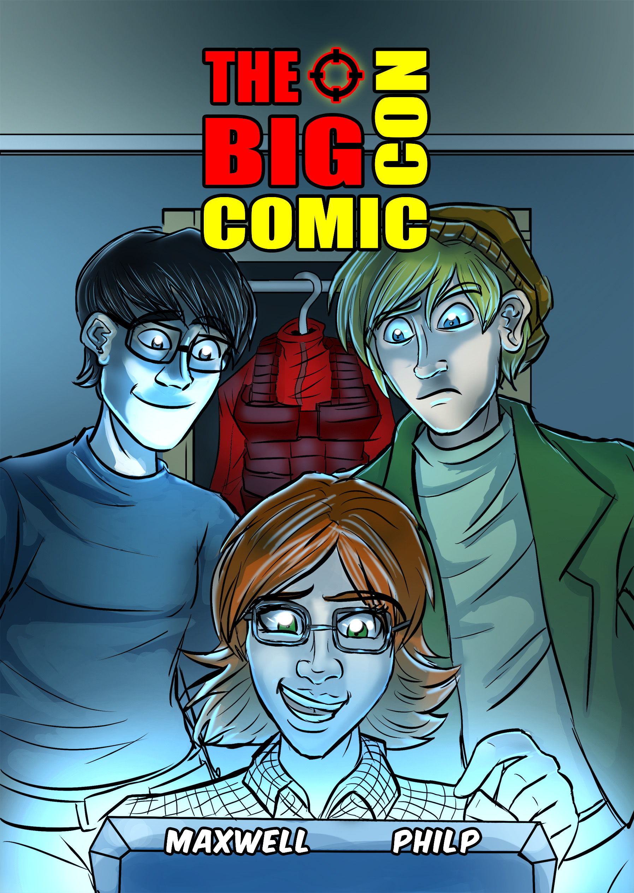

The Big Comic Con
Crime, Comics and Cosplay come together in this comic book crime caper. Chris Maclean has a BIG problem. Out of work and owing money to a loan shark he resorts to crime to make ends meet. 40 pages, full colour.
£4.00
ElectroMagnetic 1
Britain is at war with India in this Steampunk adventure series. Follow the exploits of Professor James Clerk-Maxwell as he develops a new weapon for the fight against India and defends the streets of London against terrorist attack. Meanwhile a conspiracy brews behind the scenes that could shake the foundations of the British Empire.
£4.00
ElectroMagnetic 2
The adventure continues as Professor Clerk-Maxwell and his colleague Doctor Mosora make some startling discoveries and the Professor begins his journey to the Indian war zone.
£4.00

Guardians of Scotland
The story of two of Scotland's most famous heroes, William Wallace and Andrew de Moray, who led the Scottish army to victory at Stirling Bridge in 1297. Read about Wallace's rise from outlaw to Guardian of Scotland, and Moray's daring escape from captivity. 40 pages, full colour.
£4.00
Life Support
Five writers and a dozen artists donated stories and artwork to this Science Fiction anthology which we're selling to raise funds for Children's Hospices Across Scotland (CHAS). Stories and artwork by established and new comic creators including Stephen White (Beano, Viz) and Ian Kennedy (2000AD, Commando). All profits go to CHAS.
£4.00
.jpg)
Maximized Shorts
A collection of short stories - two horror, two scifi and two superhero. Includes 'Dimensions', winner of the Dundee Comics Prize in 2017.
£4.00
.jpg)
Escape from Loch Leven
In 1567 Mary Queen of Scots surrendered to her enemies and was imprisoned on the island fortress at Loch Leven. Read this fascinating story of her plot to escape and win back her country.
£4.00
Tales of Bruce & Wallace
This brand new collection of stories features our Bannockburn and Guardians of Scotland stories in a single volume with an additional 5 short stories. 88 pages, 7 stories of the Scottish Wars of Independence.
£8.00
 Comics
Events
Contact
Comics
Events
Contact